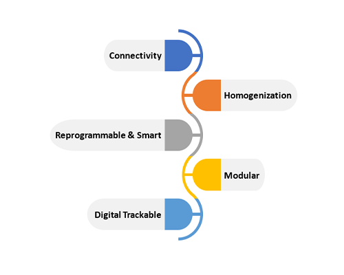
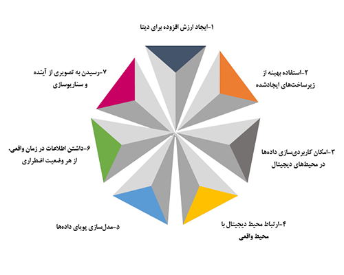
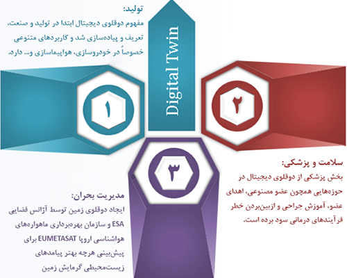
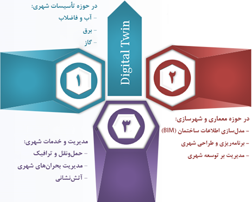
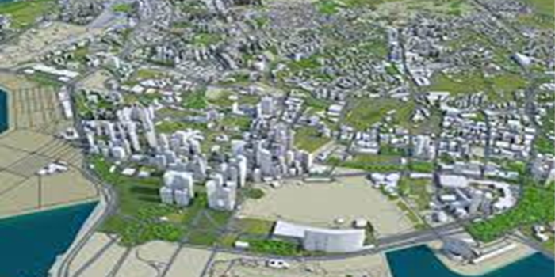
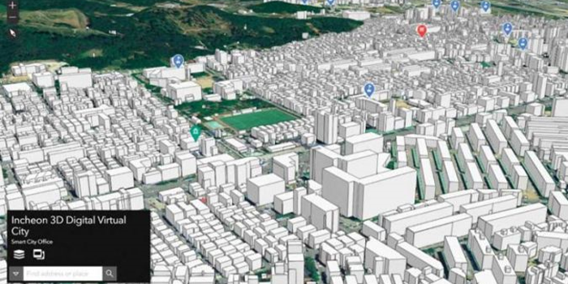
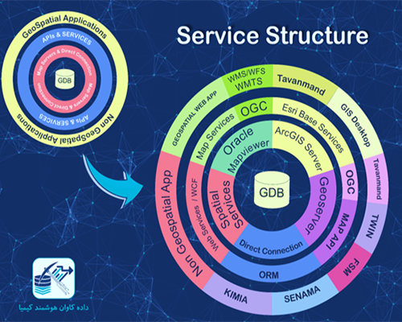

سامانه تویین
یک دوقلوی دیجیتال، نمایشی بهروز، از یک وسیله فیزیکی واقعی در حال بهرهبرداری است.
- priority زندگی یک دوقلوی دیجیتال، با متخصصان در علم داده شروع میشود که بر روی دادههای عملیاتی یک موجودیت یا سیستم، در محیط واقعی تحقیق میکنند تا یک مدل ریاضی شبیهسازی اصلی را توسعه دهند
- priority توسعهدهندگان دوقلوهای دیجیتال اطمینان حاصل مینمایند که مدل مجازی، بازخوردی از اطلاعات آنلاین/ حسگرها را از دنیای واقعی جمع آوری مینماید. این به نسخه دیجیتالی امکان تقلید و شبیهسازی اتفاقاتی که در دنیای واقعی میافتد را میدهد.
ویژگیهای Digital Twin:
اهداف:
کاربردها:
 دوقلوی دیجیتال شهری:
در قلمروی شهرهای هوشمند، دوقلوی دیجیتال، یک مدل مجازی از دنیای واقعی است که به سرعت در حال تبدیلشدن به ابزاری ضروری برای تجسم بهتر از شهر در زمان واقعی، با استفاده از منابع دادهای از ساختمانها، زیرساختهای شهری، تأسیسات، کسبوکار، جابهجایی افراد و وسایل نقلیه هستند.
پروژههای نمونه:
سرمایهگذاری ۷۳میلیون دلاری سنگاپور در پروژه مجازیسازی این شهر یک مدل سهبعدی دیجیتال از شهر که میتواند به عنوان بستر آزمایش توسط سازمانهای دولتی، مشاغل و محققان برای ساختن شهر با مقاومت بیشتر استفاده شود.
برای شهر اینچئون یک دوقلو دیجیتال ساخته و در اوایل سال ۲۰۲۱ معرفی شد. در سالهای اخیر، کرهجنوبی افزایش تب دنگی را تجربه کرده است که توسط پشهها منتقل میشود. در این پروژه بررسی شد چگونه تغییرات آب و هوایی بر جمعیت پشهها در شبه جزیره کره تأثیر میگذارد. به مدت سه سال، یک سیستم مانیتورینگ، ثبت پشهها را رصد کرده و دادههای بلادرنگ را به سرورها انتقال میداد. دادههای سیستم با سایر دادههای جغرافیایی و اطلاعات سرویس ملی هواشناسی، تلفیق شده و در سیستم مانتیورینگ قابل دسترسی است. سیستم مانیتورینگ نمونهای از یک آزمایش فوقالعاده آیندهنگر شهر هوشمند بود که در اینچئون آشکار شد.
زیرساخت پیادهسازیشده توسط شرکت:
شرکت دادهکاوان هوشمند کیمیا با سابقه ۱۱ ساله در پیادهسازی سامانههای نرمافزاری، خصوصاً زیرساختهای مکانمحور و تحلیل و دادهکاوی مکانی، تاکنون زیرساختهای زیر را پیادهسازی نموده است که از الزامات راهاندازی دوقلوی دیجیتال است:
سامانه تویین (زیرسیستم حملونقل عمومی):
این سامانه، یک همانند واقعی بهصورت نقشه سهبُعدی بلادرنگ از حملونقل عمومی است. قطارهای مترو و اتوبوسهای BRT در حال فعالیت، بر روی یک نقشه سهبُعدی واقعگرایانه با انیمیشن، حالتهای حرکت را نشان میدهد. علاوهبراین، امکان نمایش نتایج پیشبینیهای انجام شده با مدلهای پویا بر روی این سامانه نیز فراهم است.